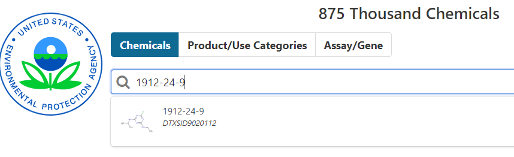
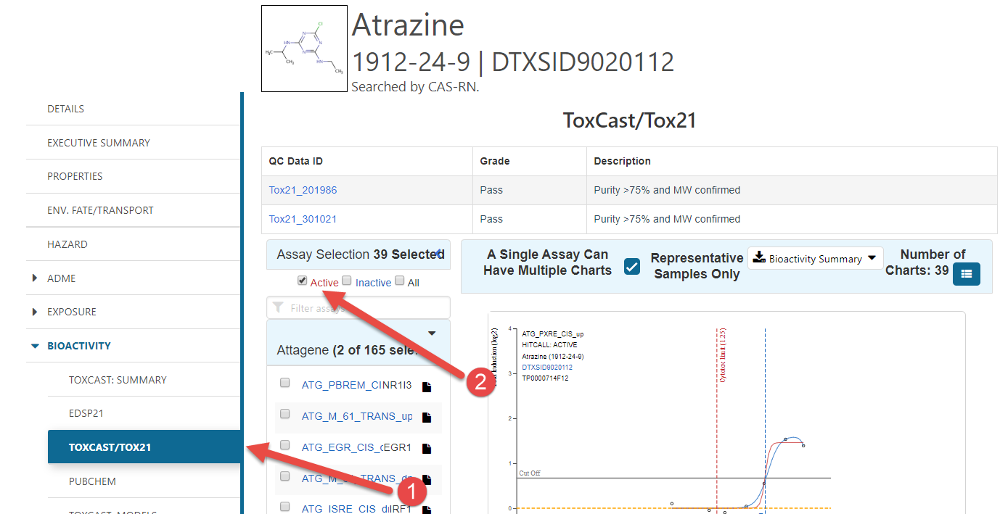
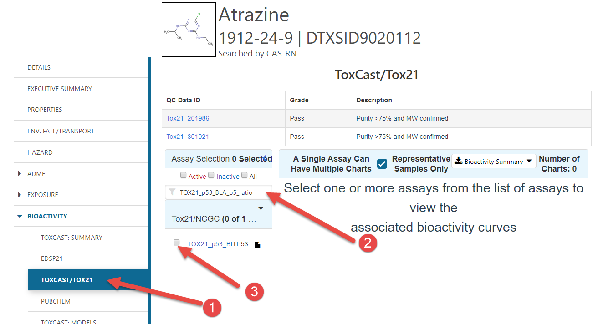
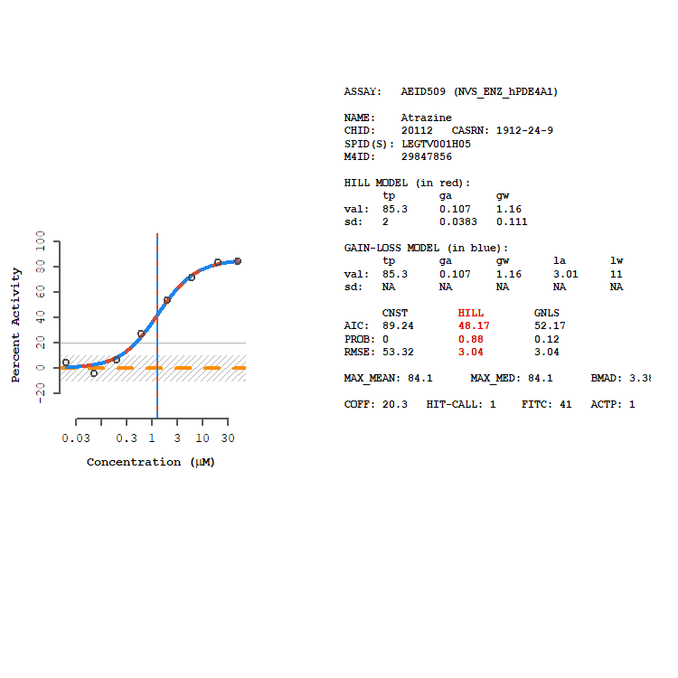

Concentration-Response Curves
03 March, 2023
does_curves.RmdThe ToxCast database flags concentration-response curves that may be unreliable or inconsistent based on several criteria; however, it is still good practice for the toxEval user to examine the concentration-response curves pertinent their data to assure that results are understood and to gain confidence in the underlying data. At times, the user will find that concentration-response curves for particular chemical-endpoints or for an entire endpoint will need to be excluded from analysis. For chemicals with an extremely large EAR value, concentration-response curves should be examined. Two ways to obtain concentration-response curves are described below (the Comptox Dashboard and the tcpl pipeline).
Comptox Dashboard
There is a web-based tool, the Comptox Dashboard that
allows you to search for a chemical by systematic name, synonym, CAS
number, DTXSID, or InChIKey. Since we focus on CAS in the
toxEval inputs, let’s explore Atrazine (CAS =
1912-24-9):

Enering the CAS will take you to a page describing properties of the specific chemical. There is a TON of great information there.

- Click the “Bioactivity” sidebar option, and then the ToxCast/ToxCast21 option.
- Click the “Active” check box to see all of the
concentration-response curves that would be included in
toxEval.
To get to a specific concentration-response curve:

- Click the “Bioactivity” sidebar option, and then the ToxCast/ToxCast21 option.
- Enter the specific endpoint of interest in the search box
- Click the endpoint’s check box
R-package: tcpl
There is another way to locally produce the concentration-response
curves using the tcpl
package. The advantage to this approach is that you can customize
the plots and order of plots. The drawback is that you need to download
a very large MySQL database and have it running locally.
If the database has been downloaded, and MySQL is up-and-running, the following code would produce a single concentration-response curve. Let’s look at Atrazine with the “NVS_ENZ_hPDE4A1” endpoint:
library(tcpl)
tcplConf(drvr = "MySQL",
user = "my_awesome_username",
pass = "my_awesome_password",
host = "localhost",
db = "database_name")
ep <- "NVS_ENZ_hPDE4A1"
cas <- "1912-24-9"
chem_info <- tcplLoadChem(field = 'casn', val = cas)
assay_info <- tcplLoadAcid(fld = "acnm", val = ep)
mc3 <- tcplLoadData(lvl = 3, type = "mc",
fld = c("acid","spid"),
val = list(assay_info$acid,
chem_info$spid))
## Load mc tables from levels of interest
mc4 <- tcplLoadData(lvl = 4, type = "mc",
fld = c("spid", "aeid"),
val = list(chem_info$spid,
unique(mc3$aeid)))
tcplPlotM4ID(mc4, lvl = 5)
The values passed to the tcplConf function will depend
on how you set up the MySQL database.